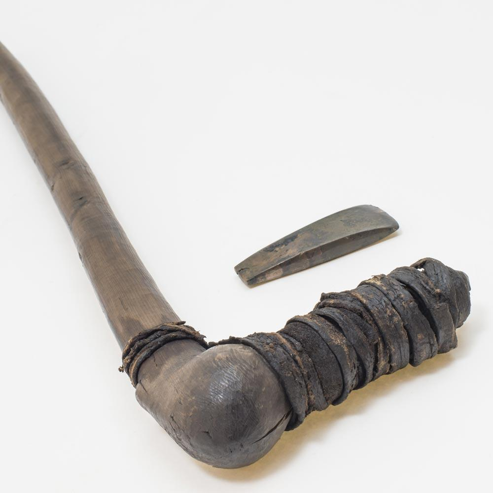

INVESTIGATION 01

THE THINGS HE CARRIEDTHE ALPS AR + 3D READY
Ötzi the Iceman
Thirteen belongings. One life to investigate. Examine the objects, scan your floor cards, and capture an artifact for a closer look.
Explore Ötzi Ötzi teacher settings ↗